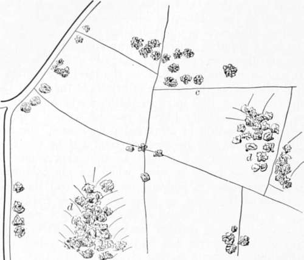
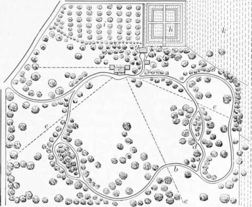
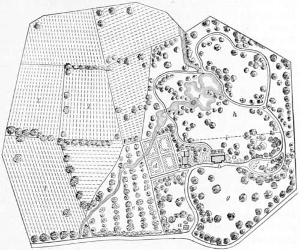

On Wood And Plantations. Part 7
Description
This section is from the book "Landscape Gardening", by Andrew Jackson Downing. Also available from Amazon: Landscape Gardening.
On Wood And Plantations. Part 7
Ground Plans Of Ornamental Plantations
To illustrate partially our ideas on the arrangement of plantations we place before the reader two or three examples, premising that the small scale to which they are reduced prevents our giving to them any character beyond that of the general one of the design. The first (Fig. 11) represents a portion, say one third or one half, of a piece of property selected for a country seat, and which has hitherto been kept in tillage as ordinary farm land. The public road, a, is the boundary on one side: dd are prettily wooded dells or hollows, which, together with a few groups near the proposed site of the house, c, and a few scattered single trees, make up the aggregate of the original woody embellishments of the locality.
Fig. 11. Plan of Farm Before Improvement.
In the next figure (Fig. 12) a ground plan of the place is given, as it would appear after having been judiciously laid out and planted, with several years' growth. At a, the approach road leaves the public highway and leads to the house at c; from whence paths of smaller size, b, make the circuit of the ornamental portion of the residence, taking advantage of the wooded dells, d, originally existing, which offer some scope for varied walks concealed from each other by the intervening masses of thicket. It will be seen here, that one of the largest masses of wood forms a background to the house, concealing also the out-buildings; while, from the windows of the mansion itself, the trees are so arranged as to group in the most pleasing and effective manner; at the same time broad masses of turf meet the eye, and fine distant views are had through the vistas in the lines, ee. In this manner the lawn appears divided into four distinct lawns or areas bounded by groups of trees, instead of being dotted over with an unmeaning confusion of irregular masses of foliage. The form of these areas varies also with every change of position in the spectator, as seen from different portions of the grounds, or different points in the walks; and they can be still further varied at pleasure by adding more single trees or small groups, which should always, to produce variety of outline, be placed opposite the salient parts of the wood, and not in the recesses, which latter they would appear to diminish or clog up. The stables are shown at f; the barn at g, and the kitchen garden adjacent at h; the orchard at i; and a small portion of the farm lands at k; a back entrance to the out-buildings is shown in the rear of the orchard. The plan has been given for a place of seventy acres, thirty of which include the pleasure-grounds, and forty the adjoining farm lands.
Fig. 12. Plan of Same Grounds Improved as Country Seat.
Figure 13 is the plan of an American mansion residence of considerable extent, only part of the farm lands, l, being here delineated. In this residence, as there is no extensive view worth preserving beyond the bounds of the estate, the pleasure-grounds are surrounded by an irregular and picturesque belt of wood. A fine natural stream or rivulet, which ran through the estate, has been formed into a handsome pond, or small lake, f, which adds much to the interest of the grounds. The approach road breaks off from the highway at the entrance lodge, a, and proceeds in easy curves to the mansion, b; and the groups of trees on the side of this approach nearest the house, are so arranged that the visitor scarcely obtains more than a glimpse of the latter, until he arrives at the most favorable position for a first impression. From the windows of the mansion, at either end, the eye ranges over groups of flowers and shrubs; while, on the entrance front, the trees are arranged so as to heighten the natural expression originally existing there. On the other front, the broad mass of light reflected from the green turf at h, is balanced by the dark shadows of the picturesque plantations which surround the lake, and skirl the whole boundary. At i, a light, inconspicuous wire fence separates that portion of the ground, g, ornamented with flowering shrubs and kept mown by the scythe, from the remainder, of a park-like character, which is kept short by the cropping of animals. At c, are shown the stables, carriage house, etc., which, though near the approach road, are concealed by foliage, though easily accessible by a short curved road, returning from the house, so as not to present any road leading in the same direction, to detract from the dignity of the approach in going to it. A prospect tower, or rustic pavilion, on a little eminence overlooking the whole estate, is shown at j. The small arabesque beds near the house are filled with masses of choice flowering shrubs and plants; the kitchen garden is shown at d, and the orchard at e.
Fig. 13. Plan of a Mansion Residence Laid Out in the Natural Stale.
Suburban villa residences are, every day, becoming more numerous; and in laying out the grounds around them, and disposing the sylvan features, there is often more ingenuity, and as much taste required, as in treating a country residence of several hundred acres. In the small area of from one half an acre to ten or twelve acres, surrounding often a villa of the first class, it is desirable to assemble many of the same features, and as much as possible of the enjoyment, which are to be found in a large and elegant estate. To do this, the space allotted to various purposes, as the kitchen garden, lawn, etc., must be judiciously portioned out, and so characterized and divided by plantations, that the whole shall appear to be much larger than it really is, from the fact that the spectator is never allowed to see the whole at a single glance; but while each portion is complete in itself, the plan shall present nothing incongruous or ill assorted.
Continue to: